Статистика обращений к star-poe.com.ua
Статистика обращений к star-poe.com.ua
Программа стартовала в чт. 4 мая 2023 15:27.
Анализ обращений к серверу с вс. 19 мар 2023 16:24 по чт. 4 мая 2023 04:18 (45,50 дней).
Статистика обращений к star-poe.com.uaПрограмма стартовала в чт. 4 мая 2023 15:27.
Анализ обращений к серверу с вс. 19 мар 2023 16:24 по чт. 4 мая 2023 04:18 (45,50 дней).
(Переход: Вверх | Основная Информация | Статистика по месяцам | Статистика по дням недели | Статистика по времени суток | Статистика по доменам | Статистика по организациям | Статистика по перенаправляющим ссылкам | Статистика отказов по ссылкам | Статистика по ссылающимся сайтам | Статистика по браузерам (подробная) | Статистика по браузерам (суммарная) | Статистика по операционным системам | Статистика по коду возврата | Статистика по размерам файлов | Статистика по типам файлов | Статистика по директориям | Статистика по запросам)
Запись в круглых скобках - данные за 7 дней до 4 мая 2023 15:27.
Успешных обращений: 2 741 (393)
Среднее кол. успешных обращений в день: 60 (56)
Успешных обращений к страницам: 373 (55)
Среднее кол. успешных обращений к страницам в день: 8 (7)
Неуспешных запросов: 1 965 (0)
Перенаправленных запросов: 178 (1)
Количество запрошенных файлов: 393 (2 286)
Количество обслуженных хостов: 406 (442)
Данных передано: 70,07 мегабайт (12,94 мегабайт)
Среднее кол. переданных данных в день: 1,54 мегабайт (1,85 мегабайт)
(Переход: Вверх | Основная Информация | Статистика по месяцам | Статистика по дням недели | Статистика по времени суток | Статистика по доменам | Статистика по организациям | Статистика по перенаправляющим ссылкам | Статистика отказов по ссылкам | Статистика по ссылающимся сайтам | Статистика по браузерам (подробная) | Статистика по браузерам (суммарная) | Статистика по операционным системам | Статистика по коду возврата | Статистика по размерам файлов | Статистика по типам файлов | Статистика по директориям | Статистика по запросам)
Каждый символ ( ) отображает 6 обращений к страницам или около этого.
) отображает 6 обращений к страницам или около этого.
| месяц | запросы | страниц | |
|---|---|---|---|
| мар 2023 | 1051 | 147 |   |
| апр 2023 | 1592 | 205 |   |
| мая 2023 | 98 | 21 |  |
Наибольшее количество обращений в апр 2023 (205 обращений к страницам).
(Переход: Вверх | Основная Информация | Статистика по месяцам | Статистика по дням недели | Статистика по времени суток | Статистика по доменам | Статистика по организациям | Статистика по перенаправляющим ссылкам | Статистика отказов по ссылкам | Статистика по ссылающимся сайтам | Статистика по браузерам (подробная) | Статистика по браузерам (суммарная) | Статистика по операционным системам | Статистика по коду возврата | Статистика по размерам файлов | Статистика по типам файлов | Статистика по директориям | Статистика по запросам)
Каждый символ () отображает 2 обращений к страницам или около этого.
| день | запросы | страниц | |
|---|---|---|---|
| вс. | 272 | 57 | |
| пн. | 609 | 76 | |
| вт. | 409 | 63 | |
| ср. | 373 | 54 | |
| чт. | 209 | 37 | |
| пт. | 327 | 43 | |
| сб. | 542 | 43 | |
(Переход: Вверх | Основная Информация | Статистика по месяцам | Статистика по дням недели | Статистика по времени суток | Статистика по доменам | Статистика по организациям | Статистика по перенаправляющим ссылкам | Статистика отказов по ссылкам | Статистика по ссылающимся сайтам | Статистика по браузерам (подробная) | Статистика по браузерам (суммарная) | Статистика по операционным системам | Статистика по коду возврата | Статистика по размерам файлов | Статистика по типам файлов | Статистика по директориям | Статистика по запросам)
Каждый символ () отображает 2 обращений к страницам или около этого.
| час | запросы | страниц | |
|---|---|---|---|
| 0 | 109 | 16 | |
| 1 | 44 | 11 | |
| 2 | 100 | 13 | |
| 3 | 118 | 16 | |
| 4 | 45 | 6 | |
| 5 | 18 | 6 | |
| 6 | 39 | 5 | |
| 7 | 50 | 9 | |
| 8 | 75 | 9 | |
| 9 | 72 | 7 | |
| 10 | 108 | 14 | |
| 11 | 54 | 14 | |
| 12 | 281 | 40 | |
| 13 | 316 | 23 | |
| 14 | 105 | 18 | |
| 15 | 100 | 11 | |
| 16 | 96 | 23 | |
| 17 | 218 | 50 | |
| 18 | 136 | 20 | |
| 19 | 48 | 10 | |
| 20 | 354 | 11 | |
| 21 | 94 | 14 | |
| 22 | 85 | 16 | |
| 23 | 76 | 11 | |
(Переход: Вверх | Основная Информация | Статистика по месяцам | Статистика по дням недели | Статистика по времени суток | Статистика по доменам | Статистика по организациям | Статистика по перенаправляющим ссылкам | Статистика отказов по ссылкам | Статистика по ссылающимся сайтам | Статистика по браузерам (подробная) | Статистика по браузерам (суммарная) | Статистика по операционным системам | Статистика по коду возврата | Статистика по размерам файлов | Статистика по типам файлов | Статистика по директориям | Статистика по запросам)
Список доменов, отсортировано по суммарному трафику.
| запросы | %байт | домен |
|---|---|---|
| 2741 | 100% | [нераспознанный IP-адрес] |
(Переход: Вверх | Основная Информация | Статистика по месяцам | Статистика по дням недели | Статистика по времени суток | Статистика по доменам | Статистика по организациям | Статистика по перенаправляющим ссылкам | Статистика отказов по ссылкам | Статистика по ссылающимся сайтам | Статистика по браузерам (подробная) | Статистика по браузерам (суммарная) | Статистика по операционным системам | Статистика по коду возврата | Статистика по размерам файлов | Статистика по типам файлов | Статистика по директориям | Статистика по запросам)
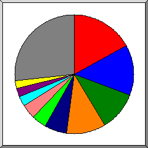
Поделено на сектора по количеству обращений.
 66.249
66.249
 94
94
 159.65
159.65
 51
51
 65.154
65.154
 205.169
205.169
 35
35
 3
3
 106
106
 46
46
 другое
другое
Показано первые 20 организаций - по количеству обращений, отсортировано по количеству обращений.
| запросы | %байт | организация |
|---|---|---|
| 444 | 20,93% | 66.249 |
| 362 | 15,93% | 94 |
| 303 | 0,32% | 159.65 |
| 295 | 0,08% | 51 |
| 175 | 8,71% | 65.154 |
| 118 | 4,87% | 205.169 |
| 110 | 4,89% | 35 |
| 79 | 3,17% | 3 |
| 68 | 1,18% | 106 |
| 61 | 2,97% | 46 |
| 59 | 2,53% | 58 |
| 52 | 2,07% | 91 |
| 35 | 2,61% | 34 |
| 34 | 1,69% | 150.109 |
| 34 | 1,77% | 104 |
| 32 | 1,58% | 44 |
| 32 | 1,51% | 176.37 |
| 31 | 1,50% | 134.249 |
| 30 | 1,50% | 216.251 |
| 29 | 1,60% | 124 |
| 358 | 18,61% | [не распознано: 83 организаций] |
(Переход: Вверх | Основная Информация | Статистика по месяцам | Статистика по дням недели | Статистика по времени суток | Статистика по доменам | Статистика по организациям | Статистика по перенаправляющим ссылкам | Статистика отказов по ссылкам | Статистика по ссылающимся сайтам | Статистика по браузерам (подробная) | Статистика по браузерам (суммарная) | Статистика по операционным системам | Статистика по коду возврата | Статистика по размерам файлов | Статистика по типам файлов | Статистика по директориям | Статистика по запросам)
Список ссылающихся URLей, отсортировано количество перенаправленных запросов.
| запросы | URL |
|---|---|
| 18 | http://star-poe.com.ua/ |
(Переход: Вверх | Основная Информация | Статистика по месяцам | Статистика по дням недели | Статистика по времени суток | Статистика по доменам | Статистика по организациям | Статистика по перенаправляющим ссылкам | Статистика отказов по ссылкам | Статистика по ссылающимся сайтам | Статистика по браузерам (подробная) | Статистика по браузерам (суммарная) | Статистика по операционным системам | Статистика по коду возврата | Статистика по размерам файлов | Статистика по типам файлов | Статистика по директориям | Статистика по запросам)
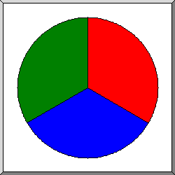
Поделено на сектора по количеству отказов.
http://star-poe.com.ua/phpmyadmin/index.php
http://star-poe.com.ua/PhpMyAdmin/index.php
http://star-poe.com.ua/pma/index.php
Список ссылающихся URLs, отсортировано по количеству отказов.
| запросы | URL |
|---|---|
| 6 | http://star-poe.com.ua/phpmyadmin/index.php |
| 6 | http://star-poe.com.ua/PhpMyAdmin/index.php |
| 6 | http://star-poe.com.ua/pma/index.php |
(Переход: Вверх | Основная Информация | Статистика по месяцам | Статистика по дням недели | Статистика по времени суток | Статистика по доменам | Статистика по организациям | Статистика по перенаправляющим ссылкам | Статистика отказов по ссылкам | Статистика по ссылающимся сайтам | Статистика по браузерам (подробная) | Статистика по браузерам (суммарная) | Статистика по операционным системам | Статистика по коду возврата | Статистика по размерам файлов | Статистика по типам файлов | Статистика по директориям | Статистика по запросам)
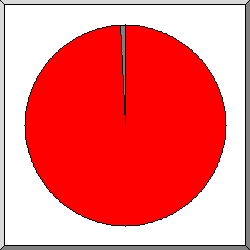
Поделено на сектора по количеству обращений.
http://star-poe.com.ua/
другое
Список ссылающихся сайтов, отсортировано по количеству обращений.
| запросы | сайт |
|---|---|
| 1766 | http://star-poe.com.ua/ |
| 4 | https://star-poe.com.ua/ |
| 4 | http://www.star-poe.com.ua/ |
| 2 | https://www.google.com/ |
| 2 | https://www.star-poe.com.ua/ |
(Переход: Вверх | Основная Информация | Статистика по месяцам | Статистика по дням недели | Статистика по времени суток | Статистика по доменам | Статистика по организациям | Статистика по перенаправляющим ссылкам | Статистика отказов по ссылкам | Статистика по ссылающимся сайтам | Статистика по браузерам (подробная) | Статистика по браузерам (суммарная) | Статистика по операционным системам | Статистика по коду возврата | Статистика по размерам файлов | Статистика по типам файлов | Статистика по директориям | Статистика по запросам)
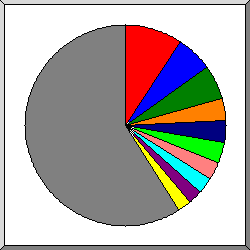
Поделено на сектора по количеству обращений к странице.
Mozilla/5.0 (Windows NT 10.0; Win64; x64)AppleWebKit/537.36 (KHTML, like Gecko) Chrome/66.0.3359.181 Safari/537.36
Mozilla/5.0 (X11; Linux x86_64) AppleWebKit/537.36 (KHTML, like Gecko) Chrome/83.0.4103.97 Safari/537.36
Mozilla/5.0 (compatible; Googlebot/2.1; +http://www.google.com/bot.html)
Mozilla/5.0 (Linux; Android 11; ZTE Blade A51) AppleWebKit/537.36 (KHTML, like Gecko) Chrome/111.0.0.0 Mobile Safari/537.36
Mozilla/5.0 (Linux; Android 11; ZTE Blade A51) AppleWebKit/537.36 (KHTML, like Gecko) Chrome/112.0.0.0 Mobile Safari/537.36
Mozilla/5.0 (Windows NT 10.0; Win64; x64) AppleWebKit/537.36 (KHTML, like Gecko) Chrome/111.0.0.0 Safari/537.36
Mozilla/5.0 (Macintosh; Intel Mac OS X 10_14_6) AppleWebKit/537.36 (KHTML, like Gecko) Chrome/76.0.3809.132 Safari/537.36
Mozilla/5.0 (Macintosh; Intel Mac OS X 10_15_7) AppleWebKit/605.1.15 (KHTML, like Gecko) Version/16.4 Safari/605.1.15
Mozilla/5.0 (iPhone; CPU iPhone OS 16_1_1 like Mac OS X) AppleWebKit/605.1.15 (KHTML, like Gecko) Version/16.1 Mobile/15E148 Safari/604.1
Mozilla/5.0 (compatible; CensysInspect/1.1; +https://about.censys.io/)
другое
Показано первые 40 браузеров - по количеству обращений к странице, отсортировано по количеству обращений к странице.
| запросы | страниц | браузер |
|---|---|---|
| 33 | 33 | Mozilla/5.0 (Windows NT 10.0; Win64; x64)AppleWebKit/537.36 (KHTML, like Gecko) Chrome/66.0.3359.181 Safari/537.36 |
| 27 | 21 | Mozilla/5.0 (X11; Linux x86_64) AppleWebKit/537.36 (KHTML, like Gecko) Chrome/83.0.4103.97 Safari/537.36 |
| 35 | 19 | Mozilla/5.0 (compatible; Googlebot/2.1; +http://www.google.com/bot.html) |
| 116 | 14 | Mozilla/5.0 (Linux; Android 11; ZTE Blade A51) AppleWebKit/537.36 (KHTML, like Gecko) Chrome/111.0.0.0 Mobile Safari/537.36 |
| 129 | 13 | Mozilla/5.0 (Linux; Android 11; ZTE Blade A51) AppleWebKit/537.36 (KHTML, like Gecko) Chrome/112.0.0.0 Mobile Safari/537.36 |
| 112 | 13 | Mozilla/5.0 (Windows NT 10.0; Win64; x64) AppleWebKit/537.36 (KHTML, like Gecko) Chrome/111.0.0.0 Safari/537.36 |
| 11 | 11 | Mozilla/5.0 (Macintosh; Intel Mac OS X 10_14_6) AppleWebKit/537.36 (KHTML, like Gecko) Chrome/76.0.3809.132 Safari/537.36 |
| 36 | 8 | Mozilla/5.0 (Macintosh; Intel Mac OS X 10_15_7) AppleWebKit/605.1.15 (KHTML, like Gecko) Version/16.4 Safari/605.1.15 |
| 118 | 8 | Mozilla/5.0 (iPhone; CPU iPhone OS 16_1_1 like Mac OS X) AppleWebKit/605.1.15 (KHTML, like Gecko) Version/16.1 Mobile/15E148 Safari/604.1 |
| 21 | 8 | Mozilla/5.0 (compatible; CensysInspect/1.1; +https://about.censys.io/) |
| 63 | 8 | Mozilla/5.0 (Windows NT 10.0; Win64; x64) AppleWebKit/537.36 (KHTML, like Gecko) Chrome/72.0.3626.119 Safari/537.36 |
| 112 | 8 | AdsBot-Google (+http://www.google.com/adsbot.html) |
| 24 | 7 | Mozilla/5.0 (Macintosh; Intel Mac OS X 10_15_7) AppleWebKit/537.36 (KHTML, like Gecko) Chrome/110.0.0.0 Safari/537.36 |
| 7 | 7 | Mozilla/5.0 (Linux; Android 6.0.1; Nexus 5X Build/MMB29P) AppleWebKit/537.36 (KHTML, like Gecko) Chrome/99.0.4844.84 Mobile Safari/537.36 (compatible; Googlebot/2.1; +http://www.google.com/bot.html) |
| 7 | 7 | Expanse, a Palo Alto Networks company, searches across the global IPv4 space multiple times per day to identify customers' presences on the Internet. If you would like to be excluded from our scans, please send IP addresses/domains to: scaninfo@paloaltonetworks.com |
| 54 | 6 | Mozilla/5.0 (Linux; Android 6.0.1; Nexus 5X Build/MMB29P) AppleWebKit/537.36 (KHTML, like Gecko) Chrome/112.0.5615.142 Mobile Safari/537.36 (compatible; Googlebot/2.1; +http://www.google.com/bot.html) |
| 35 | 6 | Mozilla/5.0 AppleWebKit/537.36 (KHTML, like Gecko; compatible; Googlebot/2.1; +http://www.google.com/bot.html) Chrome/111.0.5563.64 Safari/537.36 |
| 6 | 6 | Mozilla/5.0 (compatible; Google-Site-Verification/1.0) |
| 308 | 6 | Mozilla/5.0 (Windows NT 10.0; Win64; x64) AppleWebKit/537.36 (KHTML, like Gecko) Chrome/95.0.4638.69 Safari/537.36 |
| 5 | 5 | Mozilla/5.0 (Linux; Android 6.0.1; Nexus 5X Build/MMB29P) AppleWebKit/537.36 (KHTML, like Gecko) Chrome/111.0.5563.146 Mobile Safari/537.36 (compatible; Googlebot/2.1; +http://www.google.com/bot.html) |
| 31 | 5 | Mozilla/5.0 (Windows NT 10.0; Win64; x64) AppleWebKit/537.36 (KHTML, like Gecko; compatible; BW/1.1; bit.ly/3eZNDnO; 9e1a949f2d) Chrome/84.0.4147.105 Safari/537.36 |
| 43 | 5 | Mozilla/5.0 (Linux; Android 6.0.1; Nexus 5X Build/MMB29P) AppleWebKit/537.36 (KHTML, like Gecko) Chrome/111.0.5563.110 Mobile Safari/537.36 (compatible; Googlebot/2.1; +http://www.google.com/bot.html) |
| 5 | 5 | Mozilla/5.0 (Windows NT 10.0; Win64; x64) AppleWebKit/537.36 (KHTML, like Gecko) Chrome/71.0.3542.0 Safari/537.36 |
| 58 | 4 | Mozilla/5.0 (Windows NT 10.0; Win64; x64) AppleWebKit/537.36 (KHTML, like Gecko) Chrome/79.0.3945.79 Safari/537.36 |
| 33 | 4 | Mozilla/5.0 (Macintosh; Intel Mac OS X 10_15_7) AppleWebKit/605.1.15 (KHTML, like Gecko) Version/15.2 Safari/605.1.15 |
| 31 | 4 | Mozilla/5.0 (Macintosh; Intel Mac OS X 10_15_7) AppleWebKit/537.36 (KHTML, like Gecko) Chrome/112.0.0.0 Safari/537.36 |
| 4 | 4 | Mozilla/5.0 AppleWebKit/537.36 (KHTML, like Gecko) Chrome/74.0.3729.131 Safari/537.36 |
| 32 | 4 | Mozilla/5.0 (Linux; Android 6.0.1; Nexus 5X Build/MMB29P) AppleWebKit/537.36 (KHTML, like Gecko) Chrome/111.0.5563.64 Mobile Safari/537.36 (compatible; Googlebot/2.1; +http://www.google.com/bot.html) |
| 4 | 4 | Mozilla/5.0 (compatible; InternetMeasurement/1.0; +https://internet-measurement.com/) |
| 60 | 4 | Mozilla/5.0 (X11; Linux x86_64) AppleWebKit/537.36 (KHTML, like Gecko) HeadlessChrome/112.0.5615.121 Safari/537.36 |
| 31 | 4 | Mozilla/5.0 AppleWebKit/537.36 (KHTML, like Gecko; compatible; Googlebot/2.1; +http://www.google.com/bot.html) Chrome/112.0.5615.142 Safari/537.36 |
| 4 | 4 | Mozilla/5.0 (Macintosh; Intel Mac OS X 10_8_3) AppleWebKit/537.31 (KHTML, like Gecko) Chrome/26.0.1410.65 Safari/537.31 |
| 3 | 3 | curl/7.29.0 |
| 3 | 3 | Go-http-client/1.1 |
| 29 | 3 | Mozilla/5.0 (Linux; Android 6.0.1; Nexus 5X Build/MMB29P) AppleWebKit/537.36 (KHTML, like Gecko) Chrome/112.0.5615.49 Mobile Safari/537.36 (compatible; Googlebot/2.1; +http://www.google.com/bot.html) |
| 9 | 3 | Mozilla/5.0 AppleWebKit/537.36 (KHTML, like Gecko; compatible; Googlebot/2.1; +http://www.google.com/bot.html) Chrome/111.0.5563.110 Safari/537.36 |
| 10 | 3 | Mozilla/5.0 AppleWebKit/537.36 (KHTML, like Gecko; compatible; Googlebot/2.1; +http://www.google.com/bot.html) Chrome/112.0.5615.49 Safari/537.36 |
| 32 | 3 | Mozilla/5.0 (iPhone; CPU iPhone OS 15_2 like Mac OS X) AppleWebKit/605.1.15 (KHTML, like Gecko) Version/15.2 Mobile/15E148 Safari/604.1 |
| 31 | 3 | Mozilla/5.0 AppleWebKit/537.36 (KHTML, like Gecko; compatible; Googlebot/2.1; +http://www.google.com/bot.html) Chrome/111.0.5563.146 Safari/537.36 |
| 30 | 2 | Mozilla/5.0 (Linux; Android 7.0; SM-G930V Build/NRD90M) AppleWebKit/537.36 (KHTML, like Gecko) Chrome/59.0.3071.125 Mobile Safari/537.36 |
| 990 | 76 | [не распознано: 170 браузеров] |
(Переход: Вверх | Основная Информация | Статистика по месяцам | Статистика по дням недели | Статистика по времени суток | Статистика по доменам | Статистика по организациям | Статистика по перенаправляющим ссылкам | Статистика отказов по ссылкам | Статистика по ссылающимся сайтам | Статистика по браузерам (подробная) | Статистика по браузерам (суммарная) | Статистика по операционным системам | Статистика по коду возврата | Статистика по размерам файлов | Статистика по типам файлов | Статистика по директориям | Статистика по запросам)
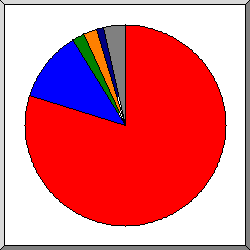
Поделено на сектора по количеству обращений к странице.
Safari
Netscape (compatible)
AdsBot-Google (+http:
Expanse, a Palo Alto Networks company, searches across the global IPv4 space multiple times per day to identify customers' presences on the Internet. If you would like to be excluded from our scans, please send IP addresses
Firefox
другое
Список браузеров на которые приходиться, как минимум 1 обращение к странице, отсортировано по количеству обращений к странице.
| N | запросы | страниц | браузер |
|---|---|---|---|
| 1 | 2137 | 291 | Safari |
| 1854 | 264 | Safari/537 | |
| 180 | 13 | Safari/604 | |
| 69 | 12 | Safari/605 | |
| 30 | 2 | Safari/602 | |
| 2 | 69 | 40 | Netscape (compatible) |
| 3 | 112 | 8 | AdsBot-Google (+http: |
| 112 | 8 | AdsBot-Google (+http://www | |
| 4 | 7 | 7 | Expanse, a Palo Alto Networks company, searches across the global IPv4 space multiple times per day to identify customers' presences on the Internet. If you would like to be excluded from our scans, please send IP addresses |
| 7 | 7 | Expanse, a Palo Alto Networks company, searches across the global IPv4 space multiple times per day to identify customers' presences on the Internet. If you would like to be excluded from our scans, please send IP addresses/domains | |
| 5 | 7 | 5 | Firefox |
| 2 | 2 | Firefox/47 | |
| 1 | 1 | Firefox/49 | |
| 1 | 1 | Firefox/33 | |
| 1 | 1 | Firefox/110 | |
| 6 | 3 | 3 | curl |
| 3 | 3 | curl/7 | |
| 7 | 3 | 3 | Go-http-client |
| 3 | 3 | Go-http-client/1 | |
| 8 | 42 | 2 | CheckMarkNetwork |
| 42 | 2 | CheckMarkNetwork/1 | |
| 9 | 28 | 2 | Mozilla |
| 10 | 1 | 1 | facebookexternalhit |
| 1 | 1 | facebookexternalhit/1 | |
| 11 | 1 | 1 | TelegramBot (like TwitterBot) |
| 12 | 8 | 1 | MSIE |
| 5 | 1 | MSIE/10 | |
| 314 | 0 | [не распознано: 5 браузеров] |
(Переход: Вверх | Основная Информация | Статистика по месяцам | Статистика по дням недели | Статистика по времени суток | Статистика по доменам | Статистика по организациям | Статистика по перенаправляющим ссылкам | Статистика отказов по ссылкам | Статистика по ссылающимся сайтам | Статистика по браузерам (подробная) | Статистика по браузерам (суммарная) | Статистика по операционным системам | Статистика по коду возврата | Статистика по размерам файлов | Статистика по типам файлов | Статистика по директориям | Статистика по запросам)
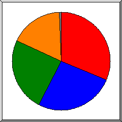
Поделено на сектора по количеству обращений к странице.
Unix
Windows
Неизвестная ОС
Macintosh
другое
Список операционных систем, отсортировано по количеству обращений к странице.
| N | запросы | страниц | ОС |
|---|---|---|---|
| 1 | 838 | 113 | Unix |
| 837 | 112 | Linux | |
| 1 | 1 | Другие Unix-системы | |
| 2 | 808 | 98 | Windows |
| 713 | 89 | Windows NT | |
| 89 | 9 | Неизвестная Windows-система | |
| 6 | 0 | Windows XP | |
| 3 | 619 | 87 | Неизвестная ОС |
| 4 | 417 | 64 | Macintosh |
| 5 | 50 | 2 | роботы |
(Переход: Вверх | Основная Информация | Статистика по месяцам | Статистика по дням недели | Статистика по времени суток | Статистика по доменам | Статистика по организациям | Статистика по перенаправляющим ссылкам | Статистика отказов по ссылкам | Статистика по ссылающимся сайтам | Статистика по браузерам (подробная) | Статистика по браузерам (суммарная) | Статистика по операционным системам | Статистика по коду возврата | Статистика по размерам файлов | Статистика по типам файлов | Статистика по директориям | Статистика по запросам)
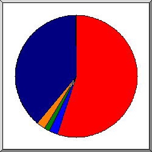
Поделено на сектора по количеству обращений.
200 OK
301 Document moved permanently
302 Document found elsewhere
304 Not modified since last retrieval
404 Document not found
Список кодов возврата, отсортированный по порядковым номерам.
| запросы | код статус |
|---|---|
| 2627 | 200 OK |
| 109 | 301 Document moved permanently |
| 69 | 302 Document found elsewhere |
| 114 | 304 Not modified since last retrieval |
| 3 | 400 Bad request |
| 1962 | 404 Document not found |
(Переход: Вверх | Основная Информация | Статистика по месяцам | Статистика по дням недели | Статистика по времени суток | Статистика по доменам | Статистика по организациям | Статистика по перенаправляющим ссылкам | Статистика отказов по ссылкам | Статистика по ссылающимся сайтам | Статистика по браузерам (подробная) | Статистика по браузерам (суммарная) | Статистика по операционным системам | Статистика по коду возврата | Статистика по размерам файлов | Статистика по типам файлов | Статистика по директориям | Статистика по запросам)
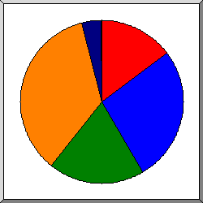
Поделено на сектора по количеству обращений.
0
101B- 1kB
1kB- 10kB
10kB-100kB
100kB- 1MB
| размер | запросы | %байт |
|---|---|---|
| 0 | 416 | |
| 1B- 10B | 0 | |
| 11B- 100B | 4 | |
| 101B- 1kB | 746 | 0,62% |
| 1kB- 10kB | 516 | 2,69% |
| 10kB-100kB | 956 | 67,25% |
| 100kB- 1MB | 103 | 29,43% |
(Переход: Вверх | Основная Информация | Статистика по месяцам | Статистика по дням недели | Статистика по времени суток | Статистика по доменам | Статистика по организациям | Статистика по перенаправляющим ссылкам | Статистика отказов по ссылкам | Статистика по ссылающимся сайтам | Статистика по браузерам (подробная) | Статистика по браузерам (суммарная) | Статистика по операционным системам | Статистика по коду возврата | Статистика по размерам файлов | Статистика по типам файлов | Статистика по директориям | Статистика по запросам)
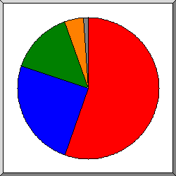
Поделено на сектора по суммарному трафику.
.css [Cascading Style Sheets]
[директории]
.js [JavaScript code]
.woff2
другое
Список расширений на которые приходиться, как минимум 0,1% трафика, отсортировано по суммарному трафику.
| запросы | %байт | расширение |
|---|---|---|
| 660 | 55,27% | .css [Cascading Style Sheets] |
| 369 | 24,57% | [директории] |
| 924 | 14,73% | .js [JavaScript code] |
| 43 | 4,44% | .woff2 |
| 54 | 0,55% | .png [PNG graphics] |
| 596 | 0,22% | .php [PHP] |
| 1 | 0,14% | .woff |
| 94 | 0,09% | [не распознано: 6 расширений] |
(Переход: Вверх | Основная Информация | Статистика по месяцам | Статистика по дням недели | Статистика по времени суток | Статистика по доменам | Статистика по организациям | Статистика по перенаправляющим ссылкам | Статистика отказов по ссылкам | Статистика по ссылающимся сайтам | Статистика по браузерам (подробная) | Статистика по браузерам (суммарная) | Статистика по операционным системам | Статистика по коду возврата | Статистика по размерам файлов | Статистика по типам файлов | Статистика по директориям | Статистика по запросам)
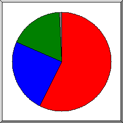
Поделено на сектора по суммарному трафику.
/wp-content/
[корневой каталог]
/wp-includes/
другое
Список директорий на которые приходиться, как минимум 0,01% трафика, отсортировано по суммарному трафику.
| запросы | %байт | директория |
|---|---|---|
| 1385 | 57,05% | /wp-content/ |
| 984 | 24,04% | [корневой каталог] |
| 347 | 18,14% | /wp-includes/ |
| 4 | 0,27% | /shop/ |
| 2 | 0,15% | /google6fbdff65a22a7a50.html/ |
| 1 | 0,12% | /product/ |
| 2 | 0,08% | /blog/ |
| 2 | 0,08% | /2023/ |
| 2 | 0,04% | /feed/ |
| 5 | 0,03% | /wp-json/ |
| 7 | 0,01% | [не распознано: 3 директорий] |
(Переход: Вверх | Основная Информация | Статистика по месяцам | Статистика по дням недели | Статистика по времени суток | Статистика по доменам | Статистика по организациям | Статистика по перенаправляющим ссылкам | Статистика отказов по ссылкам | Статистика по ссылающимся сайтам | Статистика по браузерам (подробная) | Статистика по браузерам (суммарная) | Статистика по операционным системам | Статистика по коду возврата | Статистика по размерам файлов | Статистика по типам файлов | Статистика по директориям | Статистика по запросам)
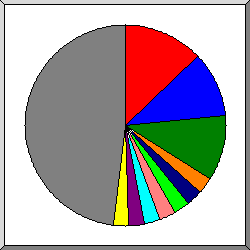
Поделено на сектора по количеству обращений.
/
/xmlrpc.php
/wp-cron.php
/wp-includes/js/jquery/jquery.min.js
/wp-content/plugins/woocommerce/assets/js/js-cookie/js.cookie.min.js
/wp-includes/js/jquery/jquery-migrate.min.js
/wp-content/plugins/woocommerce/assets/js/frontend/woocommerce.min.js
/wp-content/plugins/woocommerce/assets/js/frontend/add-to-cart.min.js
/wp-content/plugins/woocommerce/assets/js/frontend/cart-fragments.min.js
/wp-content/plugins/woocommerce/assets/js/jquery-blockui/jquery.blockUI.min.js
другое
Список файлов на которые приходиться, как минимум 20 запросов, отсортировано по количеству обращений.
| запросы | %байт | последнее время | файл |
|---|---|---|---|
| 352 | 23,82% | 4 мая 23 04:18 | / |
| 91 | 0,11% | 3 мая 23 12:30 | /?wc-ajax=get_refreshed_fragments |
| 300 | 0,22% | 8 апр 23 20:53 | /xmlrpc.php |
| 294 | 3 мая 23 19:28 | /wp-cron.php | |
| 74 | 8,67% | 3 мая 23 12:30 | /wp-includes/js/jquery/jquery.min.js |
| 44 | 5,01% | 3 мая 23 12:30 | /wp-includes/js/jquery/jquery.min.js?ver=3.6.3 |
| 30 | 3,66% | 28 мар 23 22:07 | /wp-includes/js/jquery/jquery.min.js?ver=3.6.1 |
| 70 | 0,16% | 3 мая 23 12:30 | /wp-content/plugins/woocommerce/assets/js/js-cookie/js.cookie.min.js |
| 41 | 0,09% | 2 мая 23 15:53 | /wp-content/plugins/woocommerce/assets/js/js-cookie/js.cookie.min.js?ver=2.1.4-wc.7.5.1 |
| 28 | 0,07% | 24 мар 23 02:17 | /wp-content/plugins/woocommerce/assets/js/js-cookie/js.cookie.min.js?ver=2.1.4-wc.7.5.0 |
| 70 | 1,08% | 3 мая 23 12:30 | /wp-includes/js/jquery/jquery-migrate.min.js |
| 41 | 0,64% | 3 мая 23 12:30 | /wp-includes/js/jquery/jquery-migrate.min.js?ver=3.4.0 |
| 29 | 0,44% | 28 мар 23 22:07 | /wp-includes/js/jquery/jquery-migrate.min.js?ver=3.3.2 |
| 70 | 0,19% | 3 мая 23 12:30 | /wp-content/plugins/woocommerce/assets/js/frontend/woocommerce.min.js |
| 42 | 0,10% | 2 мая 23 15:53 | /wp-content/plugins/woocommerce/assets/js/frontend/woocommerce.min.js?ver=7.5.1 |
| 27 | 0,08% | 24 мар 23 02:17 | /wp-content/plugins/woocommerce/assets/js/frontend/woocommerce.min.js?ver=7.5.0 |
| 69 | 0,29% | 3 мая 23 12:30 | /wp-content/plugins/woocommerce/assets/js/frontend/add-to-cart.min.js |
| 41 | 0,16% | 2 мая 23 15:53 | /wp-content/plugins/woocommerce/assets/js/frontend/add-to-cart.min.js?ver=7.5.1 |
| 27 | 0,12% | 24 мар 23 02:17 | /wp-content/plugins/woocommerce/assets/js/frontend/add-to-cart.min.js?ver=7.5.0 |
| 69 | 0,28% | 3 мая 23 12:30 | /wp-content/plugins/woocommerce/assets/js/frontend/cart-fragments.min.js |
| 41 | 0,16% | 2 мая 23 15:53 | /wp-content/plugins/woocommerce/assets/js/frontend/cart-fragments.min.js?ver=7.5.1 |
| 27 | 0,12% | 24 мар 23 02:17 | /wp-content/plugins/woocommerce/assets/js/frontend/cart-fragments.min.js?ver=7.5.0 |
| 69 | 0,83% | 3 мая 23 12:30 | /wp-content/plugins/woocommerce/assets/js/jquery-blockui/jquery.blockUI.min.js |
| 41 | 0,47% | 2 мая 23 15:53 | /wp-content/plugins/woocommerce/assets/js/jquery-blockui/jquery.blockUI.min.js?ver=2.7.0-wc.7.5.1 |
| 27 | 0,35% | 24 мар 23 02:17 | /wp-content/plugins/woocommerce/assets/js/jquery-blockui/jquery.blockUI.min.js?ver=2.7.0-wc.7.5.0 |
| 67 | 0,05% | 3 мая 23 12:30 | /wp-content/plugins/woocommerce-menu-bar-cart/assets/js/wpmenucart-ajax-assist.min.js |
| 41 | 0,03% | 3 мая 23 12:30 | /wp-content/plugins/woocommerce-menu-bar-cart/assets/js/wpmenucart-ajax-assist.min.js?ver=2.14.0 |
| 26 | 0,02% | 28 мар 23 22:07 | /wp-content/plugins/woocommerce-menu-bar-cart/assets/js/wpmenucart-ajax-assist.min.js?ver=2.13.1 |
| 66 | 0,86% | 3 мая 23 12:30 | /wp-content/plugins/contact-form-7/includes/swv/js/index.js |
| 41 | 0,50% | 2 мая 23 15:53 | /wp-content/plugins/contact-form-7/includes/swv/js/index.js?ver=5.7.5.1 |
| 24 | 0,35% | 24 мар 23 02:17 | /wp-content/plugins/contact-form-7/includes/swv/js/index.js?ver=5.7.4 |
| 66 | 1,07% | 3 мая 23 12:30 | /wp-content/plugins/contact-form-7/includes/js/index.js |
| 41 | 0,63% | 2 мая 23 15:53 | /wp-content/plugins/contact-form-7/includes/js/index.js?ver=5.7.5.1 |
| 24 | 0,42% | 24 мар 23 02:17 | /wp-content/plugins/contact-form-7/includes/js/index.js?ver=5.7.4 |
| 65 | 0,06% | 3 мая 23 12:48 | /wp-content/themes/storefront/assets/js/footer.min.js |
| 65 | 0,06% | 3 мая 23 12:48 | /wp-content/themes/storefront/assets/js/footer.min.js?ver=4.2.0 |
| 65 | 0,25% | 3 мая 23 12:30 | /wp-content/themes/storefront/assets/js/navigation.min.js |
| 65 | 0,25% | 3 мая 23 12:30 | /wp-content/themes/storefront/assets/js/navigation.min.js?ver=4.2.0 |
| 64 | 0,04% | 3 мая 23 12:30 | /wp-content/themes/storefront/assets/js/woocommerce/header-cart.min.js |
| 64 | 0,04% | 3 мая 23 12:30 | /wp-content/themes/storefront/assets/js/woocommerce/header-cart.min.js?ver=4.2.0 |
| 58 | 0,07% | 3 мая 23 12:30 | /wp-content/plugins/woocommerce-menu-bar-cart/assets/css/wpmenucart-main.min.css |
| 39 | 0,04% | 3 мая 23 12:30 | /wp-content/plugins/woocommerce-menu-bar-cart/assets/css/wpmenucart-main.min.css?ver=2.14.0 |
| 19 | 0,02% | 28 мар 23 22:07 | /wp-content/plugins/woocommerce-menu-bar-cart/assets/css/wpmenucart-main.min.css?ver=2.13.1 |
| 58 | 7,23% | 3 мая 23 12:30 | /wp-includes/css/dist/block-library/style.min.css |
| 39 | 4,78% | 3 мая 23 12:30 | /wp-includes/css/dist/block-library/style.min.css?ver=6.2 |
| 19 | 2,45% | 28 мар 23 22:07 | /wp-includes/css/dist/block-library/style.min.css?ver=6.1.1 |
| 57 | 0,02% | 3 мая 23 12:30 | /wp-includes/css/classic-themes.min.css |
| 39 | 0,01% | 3 мая 23 12:30 | /wp-includes/css/classic-themes.min.css?ver=6.2 |
| 18 | 0,01% | 28 мар 23 22:07 | /wp-includes/css/classic-themes.min.css?ver=1 |
| 57 | 19,72% | 3 мая 23 12:30 | /wp-content/plugins/woocommerce/packages/woocommerce-blocks/build/wc-blocks-style.css |
| 37 | 12,68% | 2 мая 23 15:53 | /wp-content/plugins/woocommerce/packages/woocommerce-blocks/build/wc-blocks-style.css?ver=9.6.6 |
| 19 | 6,69% | 24 мар 23 02:17 | /wp-content/plugins/woocommerce/packages/woocommerce-blocks/build/wc-blocks-style.css?ver=9.6.5 |
| 56 | 0,72% | 3 мая 23 12:30 | /wp-content/plugins/woocommerce/packages/woocommerce-blocks/build/wc-blocks-vendors-style.css |
| 36 | 0,44% | 2 мая 23 15:53 | /wp-content/plugins/woocommerce/packages/woocommerce-blocks/build/wc-blocks-vendors-style.css?ver=9.6.6 |
| 19 | 0,27% | 24 мар 23 02:17 | /wp-content/plugins/woocommerce/packages/woocommerce-blocks/build/wc-blocks-vendors-style.css?ver=9.6.5 |
| 53 | 5,79% | 3 мая 23 12:30 | /wp-content/themes/storefront/assets/css/base/icons.css |
| 53 | 5,79% | 3 мая 23 12:30 | /wp-content/themes/storefront/assets/css/base/icons.css?ver=4.2.0 |
| 53 | 0,18% | 3 мая 23 12:30 | /wp-content/plugins/contact-form-7/includes/css/styles.css |
| 36 | 0,12% | 2 мая 23 15:53 | /wp-content/plugins/contact-form-7/includes/css/styles.css?ver=5.7.5.1 |
| 16 | 0,06% | 24 мар 23 02:17 | /wp-content/plugins/contact-form-7/includes/css/styles.css?ver=5.7.4 |
| 53 | 2,76% | 3 мая 23 12:30 | /wp-content/themes/storefront/style.css |
| 53 | 2,76% | 3 мая 23 12:30 | /wp-content/themes/storefront/style.css?ver=4.2.0 |
| 52 | 4,07% | 3 мая 23 12:30 | /wp-content/themes/storefront/assets/css/woocommerce/woocommerce.css |
| 52 | 4,07% | 3 мая 23 12:30 | /wp-content/themes/storefront/assets/css/woocommerce/woocommerce.css?ver=4.2.0 |
| 52 | 2,92% | 3 мая 23 12:30 | /wp-content/themes/storefront/assets/css/base/gutenberg-blocks.css |
| 52 | 2,92% | 3 мая 23 12:30 | /wp-content/themes/storefront/assets/css/base/gutenberg-blocks.css?ver=4.2.0 |
| 50 | 1,97% | 3 мая 23 12:30 | /wp-content/plugins/woocommerce-ajax-filters/berocket/assets/css/font-awesome.min.css |
| 39 | 1,51% | 3 мая 23 12:30 | /wp-content/plugins/woocommerce-ajax-filters/berocket/assets/css/font-awesome.min.css?ver=6.2 |
| 11 | 0,46% | 28 мар 23 22:07 | /wp-content/plugins/woocommerce-ajax-filters/berocket/assets/css/font-awesome.min.css?ver=6.1.1 |
| 47 | 9,57% | 3 мая 23 12:30 | /wp-content/plugins/woocommerce-ajax-filters/assets/frontend/css/fullmain.min.css |
| 36 | 7,49% | 25 апр 23 10:15 | /wp-content/plugins/woocommerce-ajax-filters/assets/frontend/css/fullmain.min.css?ver=1.6.3.4 |
| 11 | 2,08% | 3 мая 23 12:30 | /wp-content/plugins/woocommerce-ajax-filters/assets/frontend/css/fullmain.min.css?ver=1.6.4.1 |
| 45 | 0,25% | 7 апр 23 09:13 | /wp-includes/images/w-logo-blue-white-bg.png |
| 44 | 0,04% | 2 мая 23 15:53 | /wp-content/plugins/speed-contact-bar/public/assets/images/phone_dark.svg |
| 41 | 4,43% | 3 мая 23 12:30 | /wp-content/themes/storefront/assets/fonts/fa-solid-900.woff2 |
| 34 | 0,01% | 2 мая 23 15:53 | /robots.txt |
| 33 | 0,84% | 29 апр 23 04:00 | /wp-includes/js/wp-emoji-release.min.js |
| 20 | 0,51% | 28 мар 23 22:07 | /wp-includes/js/wp-emoji-release.min.js?ver=6.1.1 |
| 13 | 0,33% | 29 апр 23 04:00 | /wp-includes/js/wp-emoji-release.min.js?ver=6.2 |
| 68 | 1,53% | 3 мая 23 11:57 | [не распознано: 27 файлов] |